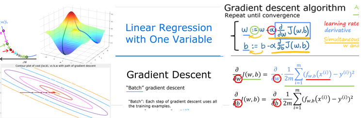
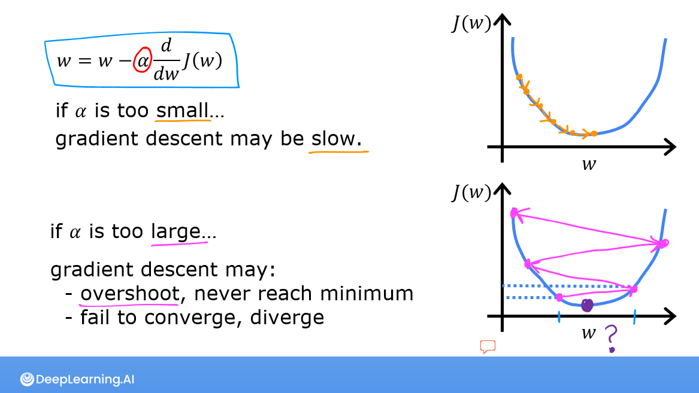
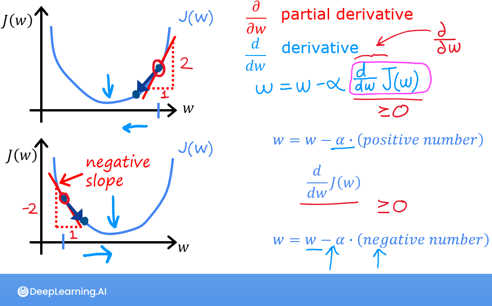

Gradient Descent
Đứng trên sườn đồi trong sương mù, muốn xuống thung lũng: hãy nhìn quanh chân, bước một bước theo hướng dốc nhất, rồi lặp lại.
Ý tưởng
Ta có hàm chi phí \(J(w,b)\) và muốn tìm điểm thấp nhất. Gradient descent là thuật toán lặp:
- Bắt đầu từ một điểm bất kỳ, thường \(w = 0, b = 0\).
- Tính gradient — hướng mà \(J\) tăng nhanh nhất.
- Bước một bước nhỏ theo hướng ngược gradient.
- Lặp lại cho tới khi hội tụ (J gần như không giảm nữa).

Công thức cập nhật
Với hồi quy tuyến tính, hai đạo hàm riêng là:
Chứng minh đạo hàm theo w (bấm để xem)
\(J = \frac{1}{2m}\sum (wx^{(i)} + b - y^{(i)})^2\). Theo quy tắc chuỗi, đạo hàm của \((u)^2\) là \(2u \cdot u'\), với \(u' = \partial u / \partial w = x^{(i)}\). Vậy \(\frac{\partial J}{\partial w} = \frac{1}{2m}\sum 2(wx^{(i)} + b - y^{(i)})x^{(i)} = \frac{1}{m}\sum (f - y)x^{(i)}\). Số 2 triệt tiêu — đó là lý do có hệ số \(\frac{1}{2}\) trong \(J\).
Phải tính cả hai đạo hàm từ \(w, b\) cũ rồi mới cập nhật. Nếu cập nhật \(w\) trước rồi dùng \(w\) mới để tính đạo hàm theo \(b\), thuật toán sẽ khác (và thường tệ hơn).
# ĐÚNG
dj_dw, dj_db = compute_gradient(x, y, w, b)
w = w - alpha * dj_dw
b = b - alpha * dj_dbCài đặt
Hàm tính gradient mình viết trong bài Practice Lab:
def compute_gradient(x, y, w, b):
m = x.shape[0]
dj_dw = 0
dj_db = 0
for i in range(m):
f_wb = w * x[i] + b
dj_db_i = f_wb - y[i] # sai số
dj_dw_i = (f_wb - y[i]) * x[i] # sai số × đặc trưng
dj_db += dj_db_i
dj_dw += dj_dw_i
dj_dw = dj_dw / m
dj_db = dj_db / m
return dj_dw, dj_dbVà vòng lặp gradient descent (theo Lab04):
import math
def gradient_descent(x, y, w_in, b_in, alpha, num_iters, cost_function, gradient_function):
w, b = w_in, b_in
J_history = []
for i in range(num_iters):
dj_dw, dj_db = gradient_function(x, y, w, b)
w = w - alpha * dj_dw
b = b - alpha * dj_db
if i < 100000:
J_history.append(cost_function(x, y, w, b))
if i % math.ceil(num_iters / 10) == 0:
print(f"Iteration {i:4}: Cost {J_history[-1]:0.2e}")
return w, b, J_history
w_final, b_final, J_hist = gradient_descent(x_train, y_train, 0, 0, 1.0e-2, 10000,
compute_cost, compute_gradient)
# (w,b) ≈ (199.99, 100.01)Demo: tự tay chạy gradient descent
Hãy thử:
- α ≈ 0.05: hội tụ êm, J giảm đều.
- α rất nhỏ (0.001): hội tụ cực chậm.
- α ≈ 0.4: J vẫn giảm nhưng đường thẳng “lắc” qua lại.
- α ≥ 0.5: J tăng vọt — thuật toán phân kỳ.
Learning rate α

| α | Hiện tượng |
|---|---|
| Quá nhỏ | Hội tụ đúng nhưng rất chậm, tốn nhiều vòng lặp. |
| Vừa | J giảm nhanh và đều sau mỗi vòng. |
| Quá lớn | J dao động hoặc tăng lên — phân kỳ. |
Một chi tiết hay: dù α cố định, các bước sẽ tự nhỏ dần khi tới gần cực tiểu, vì đạo hàm ở đó tiến về 0.

Batch, mini-batch và stochastic
Gradient descent trong khoá C1 là batch gradient descent: mỗi bước dùng toàn bộ \(m\) ví dụ. Với dữ liệu lớn (hàng triệu ví dụ), mỗi bước rất tốn kém. Các biến thể:
- Stochastic GD (SGD): mỗi bước chỉ dùng 1 ví dụ — nhanh nhưng nhiễu.
- Mini-batch GD: mỗi bước dùng một lô nhỏ (32, 64, 256…) — cân bằng giữa hai cái trên, là chuẩn mực trong deep learning. TensorFlow mặc định
batch_size=32(gặp lại ở chương 8).
Khi tự cài đặt đạo hàm, rất dễ sai một dấu. Cách kiểm tra: so sánh với xấp xỉ sai phân trung tâm
$$ \frac{\partial J}{\partial w} \approx \frac{J(w + \varepsilon, b) - J(w - \varepsilon, b)}{2\varepsilon}, \quad \varepsilon \approx 10^{-4} $$eps = 1e-4
num = (compute_cost(x, y, w + eps, b) - compute_cost(x, y, w - eps, b)) / (2 * eps)
ana, _ = compute_gradient(x, y, w, b)
print(abs(num - ana)) # nên rất nhỏ, cỡ 1e-7Đây cũng chính là ý tưởng trong lab Derivatives ở chương 10.
- C1_W1_Lab04 — Gradient Descent for Linear Regression
- C1_W2 Practice Lab — kết quả: \(w \approx 1.166\), \(b \approx -3.63\); dự đoán lợi nhuận cho thành phố 35.000 dân ≈ 4.519$, 70.000 dân ≈ 45.342$.
Từ ghi chú Notion
- Lặp đến khi hội tụ; cập nhật \(w\) và \(b\) cùng lúc.
- Khi \(J\) tới cực tiểu cục bộ, đạo hàm bằng 0 nên gradient descent giữ nguyên tham số.
- Hàm lồi chỉ có một cực tiểu, vừa là cực tiểu cục bộ vừa là toàn cục. Hàm chi phí bình phương của hồi quy tuyến tính là hàm lồi.
- “Batch” gradient descent: mỗi bước dùng toàn bộ ví dụ huấn luyện.
Trong bản ghi của mình, hàm gradient_descent còn lưu lịch sử tham số p_history để vẽ đường đi trên đồ thị đồng mức, và in thêm \(\partial J/\partial w\), \(\partial J/\partial b\) mỗi 10% số vòng lặp:
if i < 100000: # tránh tràn bộ nhớ
J_history.append(cost_function(x, y, w, b))
p_history.append([w, b])
if i % math.ceil(num_iters / 10) == 0:
print(f"Iteration {i:4}: Cost {J_history[-1]:0.2e} ",
f"dj_dw: {dj_dw: 0.3e}, dj_db: {dj_db: 0.3e} ",
f"w: {w: 0.3e}, b:{b: 0.5e}")Nguồn Notion: Regression and Classification
Ghi nhớ
- \(w := w - \alpha\,\partial J/\partial w\), \(b := b - \alpha\,\partial J/\partial b\), cập nhật đồng thời.
- Đạo hàm của hồi quy tuyến tính: trung bình của (sai số × đặc trưng).
- Luôn vẽ J theo số vòng lặp để kiểm tra: J phải giảm sau mỗi vòng.
Tự kiểm tra
Tại điểm cực tiểu, một bước gradient descent làm gì với w?
Không thay đổi gì: đạo hàm bằng 0 nên \(w := w - \alpha \cdot 0 = w\).
J tăng sau mỗi vòng lặp. Nguyên nhân khả dĩ nhất?
α quá lớn, hoặc code gradient sai dấu (cộng thay vì trừ). Thử giảm α đi 3–10 lần.